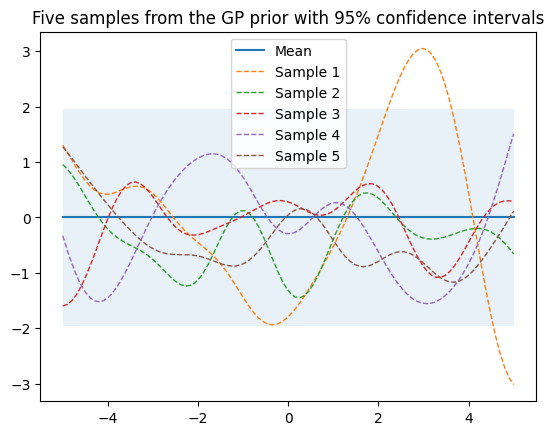

import numpy as np
from matplotlib import pyplot as plt
%matplotlib inline
# 设置随机种子以确保重复性
np.random.seed(8)
def plot_gp(mu, cov, title_str, X, X_train=None, Y_train=None, samples=[] ):
X = X.ravel() # X.ravel()用于将多维数组X展平为一维数组。
mu = mu.ravel()
uncertainty = 1.96 * np.sqrt(np.diag(cov)) # 通过计算协方差矩阵的对角线元素的平方根，可以得到每个参数的标准差。乘以 1.96，可以得到一个置信区间，表示该参数的不确定性范围。
plt.fill_between(X, mu + uncertainty, mu - uncertainty, alpha=0.1)
plt.plot(X, mu, label='Mean')
for i, sampel in enumerate(samples):
plt.plot(X, sampel, lw=1, ls='--', label=f'Sample {i+1}')
if X_train is not None:
plt.plot(X_train, Y_train, 'rx')
plt.legend()
plt.title(title_str)
def kernel(a, b):
"""定义一个核函数，返回两个输入位置之间的平方指数距离
将平方运算分解为三个部分
每个输入位置是多维的，因此需要对所有维度求和
"""
sq_dist = np.sum(a**2,1).reshape(-1,1) +np.sum(b**2,1) - 2*np.dot(a,b.T)
return np.exp(-sq_dist)
def ise_kernel(X1, X2, l=1.0, sigma_f = 1.0):
"""
Isotropic squared exponential kernel.
kernel是ise_kernel的特殊情况，l=1.0, sigma_f = 1.0
"""
sq_dist = np.sum(X1**2, 1).reshape(-1,1) + np.sum(X2**2,1) - 2*np.dot(X1,X2.T)
return sigma_f**2 * np.exp(-0.5 / l**2 * sq_dist)
def multivariante_samples01(X, l=1.0, sigma_f=1.0):
"""
生成多元高斯过程的样本:通过标准正态分布生成的随机数，乘以L，得到一个多元高斯分布的随机数
"""
# 计算pairwise distance, 得到一个nxn 矩阵
mu = np.zeros(X.shape)
K = ise_kernel(X, X, l, sigma_f)
L = np.linalg.cholesky(K + 1e-6*np.eye(len(X)))
samples = np.dot(L, np.random.normal(size=(len(X), 5)))
return samples, K, mu
def multivariante_samples02(X, l=1.0, sigma_f=1.0):
"""
生成多元高斯过程的样本：调用np.random.multivariate_normal()函数，得到一个多元高斯分布的随机数
"""
# 计算pairwise distance, 得到一个nxn 矩阵
mu = np.zeros(X.shape)
K = ise_kernel(X, X)
samples = np.random.multivariate_normal(mu.ravel(), K, 5)
return samples, K, mu
# 设置当函数增长到无穷大时函数的输入位置数量 setting number of input locations which approximates a function when growing to infinity
n = 100
X_test = np.linspace(-5,5,n).reshape(-1,1)
print(f"X_test的shape是{X_test.shape}")
samples, K, mu = multivariante_samples02(X_test, l=1.0, sigma_f=1.0)
print(f"multivariante_samples的shape是{multivariante_samples.shape}")
print(f"K_multi的shape是{K.shape}")
title_str = "Five samples from the GP prior with 95% confidence intervals"
plot_gp(mu, K, title_str, X_test, samples=samples)X_test的shape是(100, 1)
multivariante_samples的shape是(100, 5)
K_multi的shape是(100, 100)